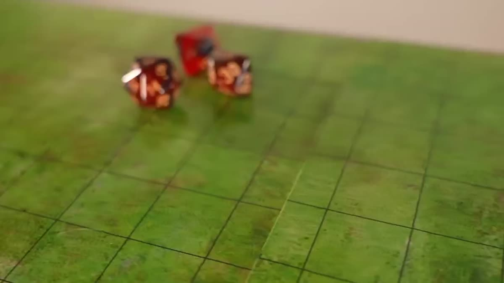
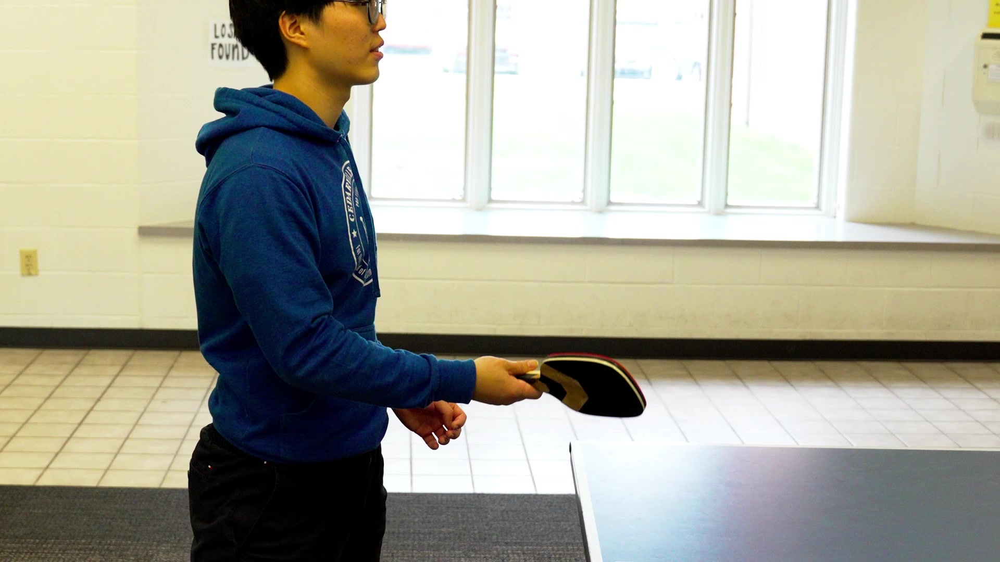
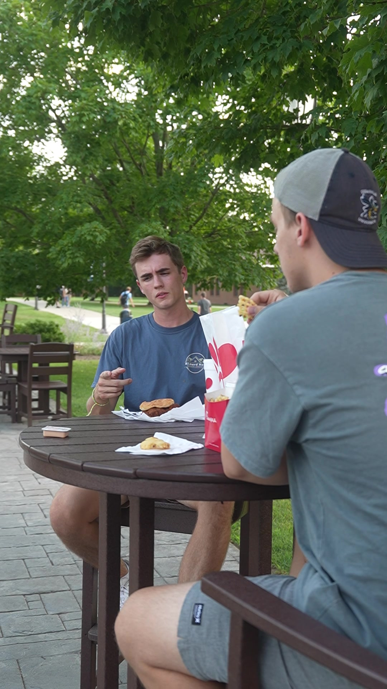

Impacting Lives
One Video at a Time
I am an aspiring professional whose goal is to create content that taps into the emotions of viewers and ultimately inspires them.
↓Purpose Driven Film
I want to create content that moves the audience personally by using a combination of the story and the music to encourage and motivate them.

EXPLORE FILM ↗01 / DIALOGUE-DRIVEN SHORT FILMBunions and
Bunions and
Dragons
The idea behind this video was one hundred percent humor. The goal is to make the viewer laugh the whole time
VIEW PROJECT ↗
EXPLORE FILM ↗02 / INTERVIEW + PROMOPing Pong
Ping Pong
Promo
I wanted people to see that the org was fun and competitive, and I wanted them to consider joining once they watched.
VIEW PROJECT ↗03 / VERTICAL COMMERCIALChick-fil-A
Chick-fil-A
Sauce Promo
I wanted the viewers to enjoy watching the video, laugh at the comedy of it, and also buy more Chick-fil-A sauce.
VIEW PROJECT ↗
EXPLORE FILM ↗The man behind the work
About me ↗Let's Connect